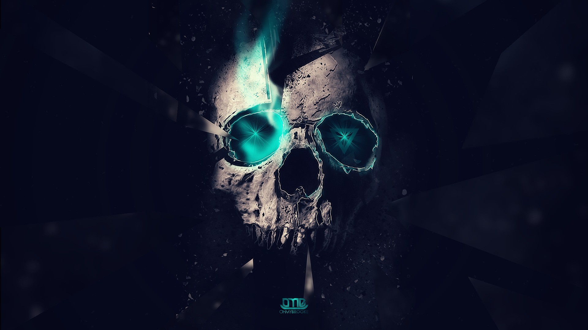

Gestructureerd
Dit gerecht is vrij eenvoudig te maken. Ideaal op een doordeweekse dag als je even niet weet wat je met het leven aan moet. Als je wel weet wat je met het leven aan moet, is dit gerecht ook heel lekker. Drinksuggestie: een krat bier. Ingrediënten: Hoofdingrediënten: 1 Max Molovich (ongeveer 77 kilogram) 1 zoon